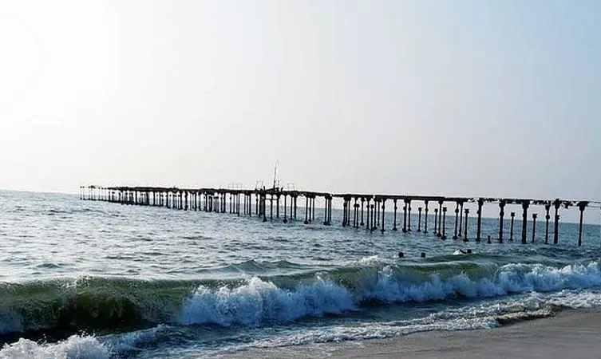

01.Kuttanad Backwaters

One of the best places to visit in Alleppey is Kuttanad Backwaters. This isn’t a place, it’s a phenomenon. It is a spectacular lagoon, surrounded by the beauty of lakes, rivers, canals, misty mountains and ethereal landscapes.
The experience of floating along the pristine backwaters on a houseboat is inexplicable. You will have to live it to know it! The place is also known as the ‘Rice bowl of Kerala,’ for its stunning rice plantations. If you are in Alleppey for a day, then this place should be your entire itinerary.
Location: Kuttanad Taluk, Alappuzha district, Kerala—688504.
Timings: 10.45 AM to 9.15 PM.
Entry Fees: INR 10 for lower
INR 15 for upper decks
02.Krishnapuram Palace

It is one of the most popular museums in Alleppey. Built-in the 18th century by the king of Travancore, Anizham Thirunal Marthanda Varma, Krishnapuram Palace is quite popular for its vintage architecture and artistic murals.
Currently maintained by the Archaeological Department of Kerala, the palace is also home to the biggest mural painting of Kerala-- the 'Gajendra Moksha.’ The enriching mural painting covers an area of about 53 km, making this palace one of the most popular places to visit in Alleppey.
Located: District Kayamkulam, Oachira Rd, Near, Krishnapuram, Kerala- 690533.
Timings:9 AM to 1 PM
2 PM to 4.30 PM (closed on Mondays)
Entry fee: INR 5 for children
INR 10 for adults.
03.Alleppey Beach

Glistening sands, crystal clear water, beautiful waves, enchanting sunrise, and sunset is what makes the Alappuzha or the Alleppey beach one of the best places to visit in Alleppey. This stunningly beautiful beach is known for its vast, endless stretches, thereby proving as a getaway for couples as well as families.
The remains of Alappuzha Sea Bridge also make it one of the most popular destinations for explorers, narrating the tales of those times when Alleppey was one of the most famous and important port destinations in the state of Kerala. The beach has beautiful stretches, making the visit to this beach quite ecstatic and enjoyable.
The beach is also close to Sea View Park, which offers an opportunity to enjoy and have fun through different types of boat rides. A picnic spot is located close-by, therefore families can enjoy a day off at the beach and picnic at that spot. The beach is often referred to as the ‘Venice of the East,’ because of its romantic location and popularity among European countries.
Location: Alappuzha 688007
Timings: All Day
Entry Fees:None.